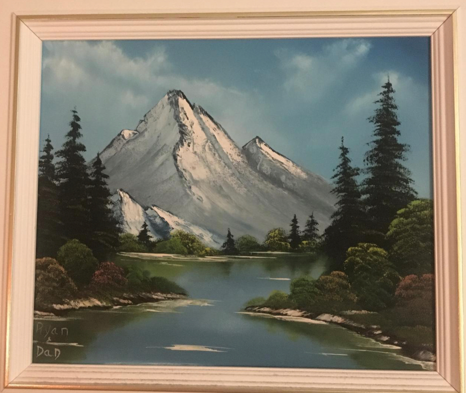

Hello, my name is Ryan. I currently working as an Interactive Developper in the E-Learning space. I like to combine my passion for web dev and design. I have made Full-Stack websites before however I felt I skipped some steps with learning the fundamentals. I went straight into the MERN stack. I will give myself one month to get comfortable with HTML and CSS then another month with Javascript. I will create a front end webite then add APIs when needed, if needed. I also know the importance of always coding so I do not loose my skill.
